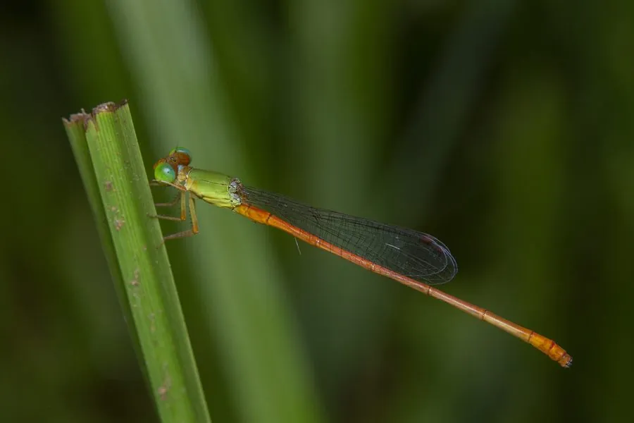

昆虫 · 动物界
红蟌 Ceriagrion auranticum

通体橙红或鲜红的小型豆娘，常在水田、池塘和沟渠边的草叶上停歇，是南方水乡夏秋季节常见的蟌类之一。
- 分类
- 门节肢动物门纲昆虫纲目蜻蜓目科蟌科属红蟌属
- 栖息环境
- 水田、池塘、沟渠和缓流河边，常停在水边草叶和稻叶上
- 地理分布
- 东亚和东南亚，中国南方常见
- 保护级别
- 暂无评估
物种志
红蟌成虫体长 30–35 mm，翅展 40–45 mm，通体橙红或鲜红色，翅透明，停息时竖立在背上；复眼呈浅色，与红色的身体形成对比。它的体色在水边十分醒目。
红蟌分布于东亚和东南亚，中国南方常见，栖息于水田、池塘、沟渠和缓流河边。成虫捕食小型昆虫，常停在水边的草叶和稻叶上，飞行距离较短。繁殖期雌虫在水面植物上产卵，稚虫水生，生活在浅水草丛中，捕食小型水生动物。红蟌在水稻田边尤其常见，是南方水乡夏秋季节常见的小昆虫。蟌类的稚虫生活在水中，成虫才到岸上活动，这种生活史与蜻蜓相似。目前它没有IUCN 的正式评估，中国未将其列入国家重点保护野生动物名录。
形态与习性
- 食性成虫捕食小型昆虫，稚虫捕食水生小动物
- 体长30–35 mm，翅展 40–45 mm
- 体色通体橙红或鲜红色，复眼颜色较浅
- 栖息地水田、池塘、沟渠和缓流河边
- 繁殖雌虫在水面植物上产卵
- 稚虫水生，生活在浅水草丛中
趣味知识
- 红蟌通体橙红，是水田边最容易辨认的小型豆娘之一。
- 它常停在稻叶和水草上，飞行距离很短。
- 蟌类的稚虫生活在水中，成虫才到岸上活动。